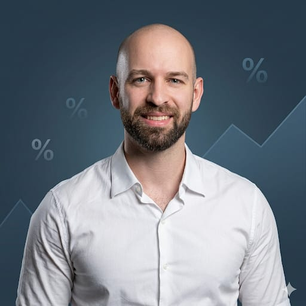

8 anos analisando DRE, gerindo fluxo de caixa e apresentando resultado para diretoria de uma das maiores distribuidoras de food service do Brasil. Agora, levando esse conhecimento para quem mais precisa: o dono de negócio que toca tudo sozinho.

Comecei minha carreira em controladoria e fui crescendo dentro do mundo financeiro corporativo. Hoje sou Gerente de FP&A em uma grande distribuidora de alimentos — responsável por analisar resultado, projetar cenários e transformar números em decisões estratégicas.
Mas ao longo desse caminho, fui percebendo algo que me incomodava profundamente: donos de pequenos negócios tomam as mesmas decisões que grandes empresas — só que sem nenhum dado.
Sem DRE. Sem controle de CMV. Sem fluxo de caixa projetado. No feeling. E pagam caro por isso — com negócios que faturam mas não lucram, com caixas que sempre surpreendem negativamente, com decisões de preço que parecem certas mas destroem a margem.
Numério nasceu de uma pergunta simples: e se eu pudesse levar o mesmo rigor financeiro de uma grande corporação para quem toca o negócio sozinho? Sem jargão contábil. Sem complexidade desnecessária. Só clareza.
Primeiros anos analisando custos, margens e resultado em empresas do setor alimentício. Aprendi a ler e construir DRE do zero.
Comecei a trabalhar com projeções financeiras, cenários e análise de portfólio. Aprendi como grandes empresas tomam decisões com dados.
Assumi a gestão financeira de operação com faturamento expressivo. Apresentações mensais de resultado para diretoria e conselho.
Decidi compartilhar o que aprendi. O mesmo conhecimento que as grandes empresas têm — traduzido para a realidade do pequeno negócio.
Esses são exemplos reais do que acontece quando um dono de negócio não tem clareza financeira. Nomes fictícios, situações verdadeiras.
"Meu salão estava sempre cheio. Faturava R$80k por mês. Mas no final de todo mês eu não conseguia me pagar. Achei que era problema de movimento. Era problema de margem — e eu nem sabia o que era isso."
"Abri meu segundo salão achando que estava crescendo. Dois meses depois percebi que o segundo estava consumindo o lucro do primeiro. Não tinha como saber isso sem um DRE."
"Eu precificava tudo olhando o concorrente. Um dia um contador amigo meu fez uma análise rápida e mostrou que eu vendia 3 produtos no prejuízo há 2 anos. Dois anos. Sem saber."
Não importa o tamanho da empresa. Clareza financeira não deveria ser privilégio de quem tem CFO.
Quero aprender com Raphael →